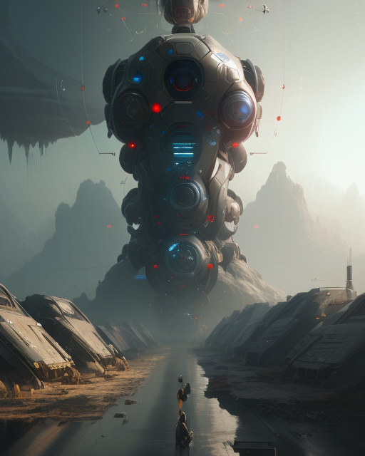
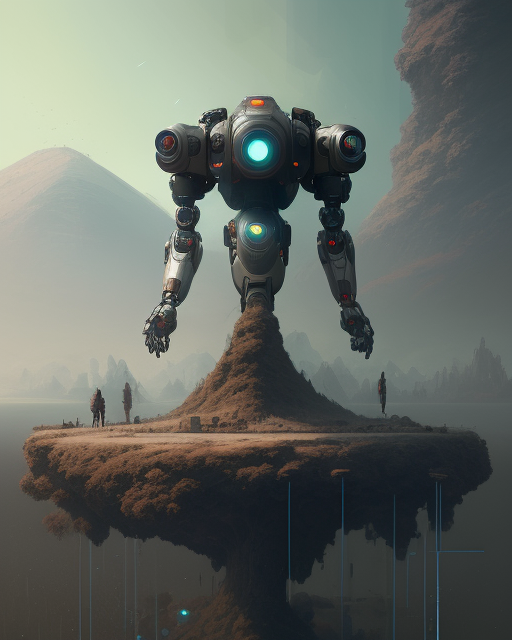
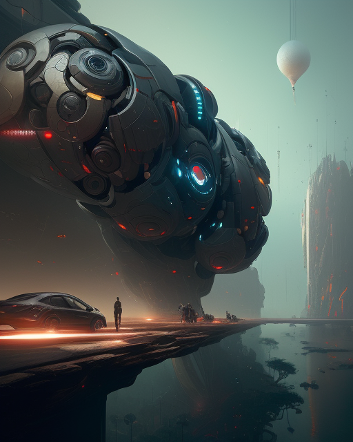
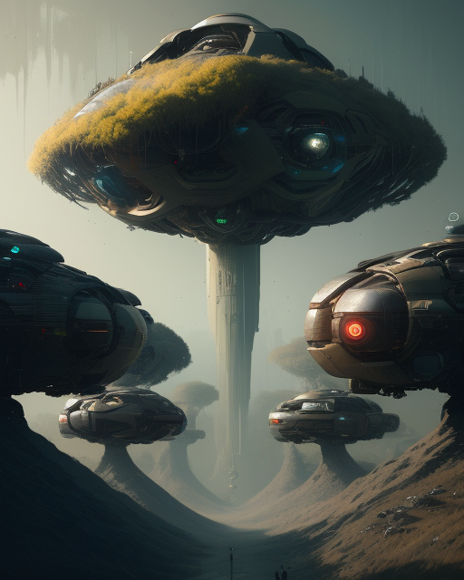

Generative AI Exploration
Theme: AI Taking Over the Human Race




Process
- Go to starryai
- Click on the Create button
- The prompt is:
Image depicting an abstract idea of artificial intelligence systems ruling over the human race.
- Set the style to Abstract World
- Click on the Generate button
Positives of the AI Generation Tool
- Generates images very quickly
- Able to depict a dystopian world
- Visual is artistic and gives the correct emotional impressions to the viewer. The image is dystopian, futuristic, and negative-looking.
- From far away, it seems like a human artist created these. It doesn't seem artificially produced.
Negatives of the AI Generation Tool
- In the 3rd image, the reflection on the water seems off. The reflection looks like trees on a hill, but that's not what it should be reflecting.
- All the images produce a bunch of big robots, so there seems to be a lack of diversity.
- The images lack details in terms of the objects they show. There seems to be one main object and other objects, but those are either too small to identify or blurry. For example, the human image in 3. It looks like it is either standing or riding a bike. The car in that image is also blurry, and parts of the car are not rendered, like the wheels.
Impacts of AI Generative Tools
- Artistic Innovation: Generative tools will continue to push the boundaries of artistic expression. Artists and creators will increasingly leverage these tools to produce unique and novel artworks, influencing visual arts, music, literature, and other creative disciplines.
- Enhanced Human-Computer Interaction: As generative tools become more sophisticated, they will enhance human-computer interaction. Natural language processing combined with generative capabilities will lead to more intuitive and personalized user experiences in applications ranging from virtual assistants to customer support chatbots.
- Scientific Discovery and Exploration: In fields like biology and chemistry, generative models can be applied to simulate and explore molecular structures, potentially accelerating drug discovery and scientific research. These tools may contribute to breakthroughs in understanding complex systems.
- Ethical Considerations: The use of generative tools will raise ethical concerns related to deepfakes, misinformation, and the potential for malicious use. Society will need to develop frameworks and regulations to address these challenges and ensure responsible use.
- Education and Training: Generative tools will find applications in education, enabling interactive and personalized learning experiences. These tools can assist in creating simulations, educational content, and adaptive learning environments.